SECCIÓN 9F
SISTEMAS AUDIO
Precaución: Desconecte el cable negativo de la batería antes de desmontar o instalar cualquier unidad eléctrica o cuando exista la posibilidad de que una herramienta o equipo pueda entrar en contacto con bornes eléctricos expuestos. La desconexión de dicho cable ayudará a evitar lesiones personales y daños al vehículo. La llave de contacto debe estar en posición LOCK a menos que se indique lo contrario.
ESPECIFICACIONES
Especificaciones de apriete
| Aplicación | N•m | Árbol de transmisión izquierdo | Articulación |
| Tornillos del mando a distancia del equipo de sonido | 3 | - | 27 |
| Tornillos del equipo de sonido | 4 | - | 35 |
| Tornillos de los altavoces de las puertas | 2 | - | 18 |
| Tornillos del módulo de la antena del cristal | 2 | - | 18 |
DIAGRAMAS DE ESQUEMAS Y DIRECCIONES
Circuito del sistema audio
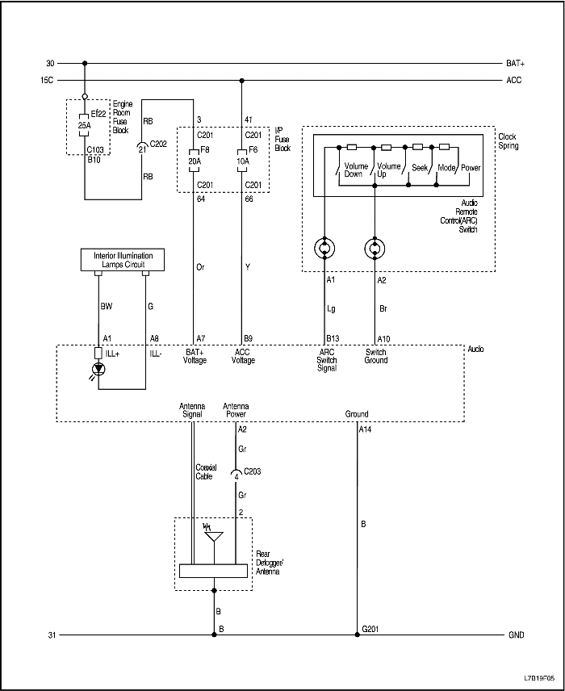


Circuito de altavoz (sin amplificador de potencia)
Conducción a izquierdas
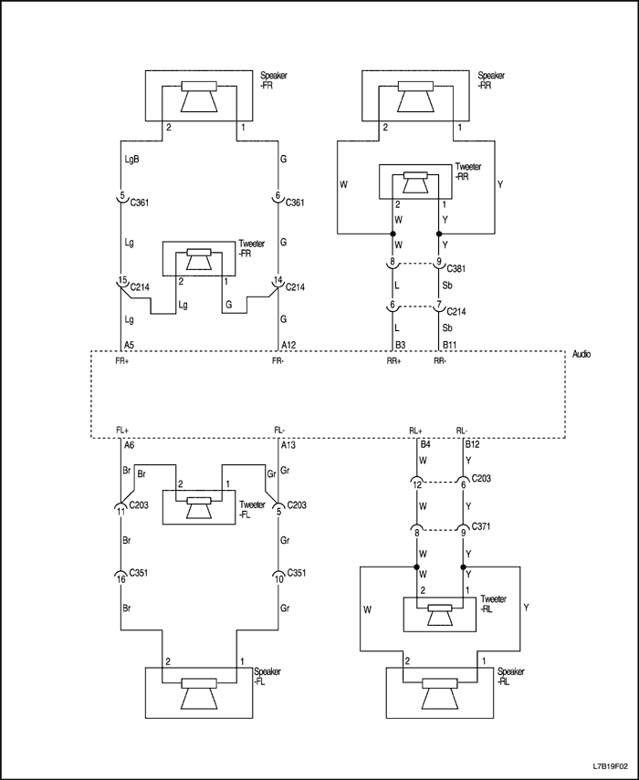
Conducción a derechas
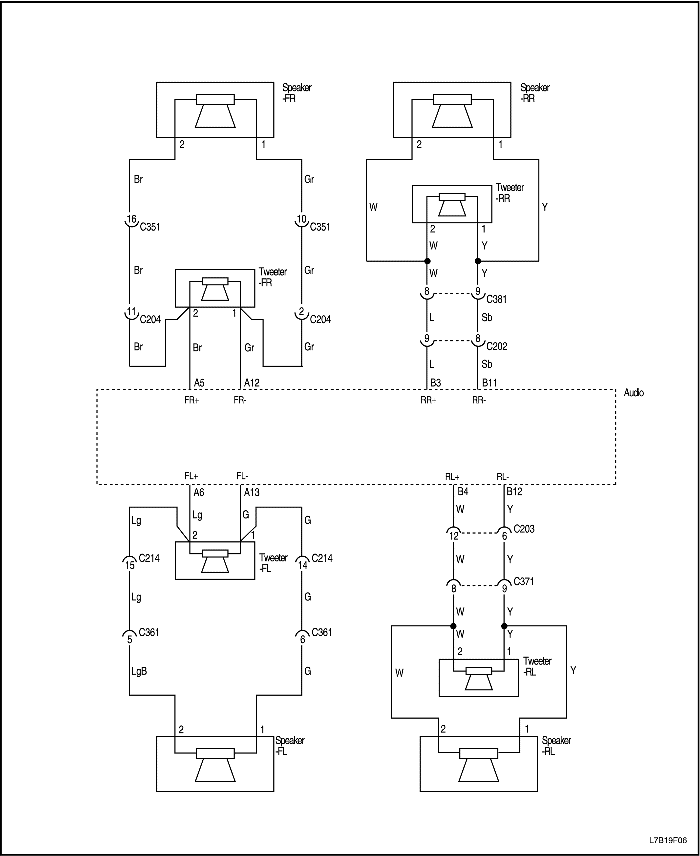
Circuito de altavoz (con amplificador de potencia)
Conducción a izquierdas
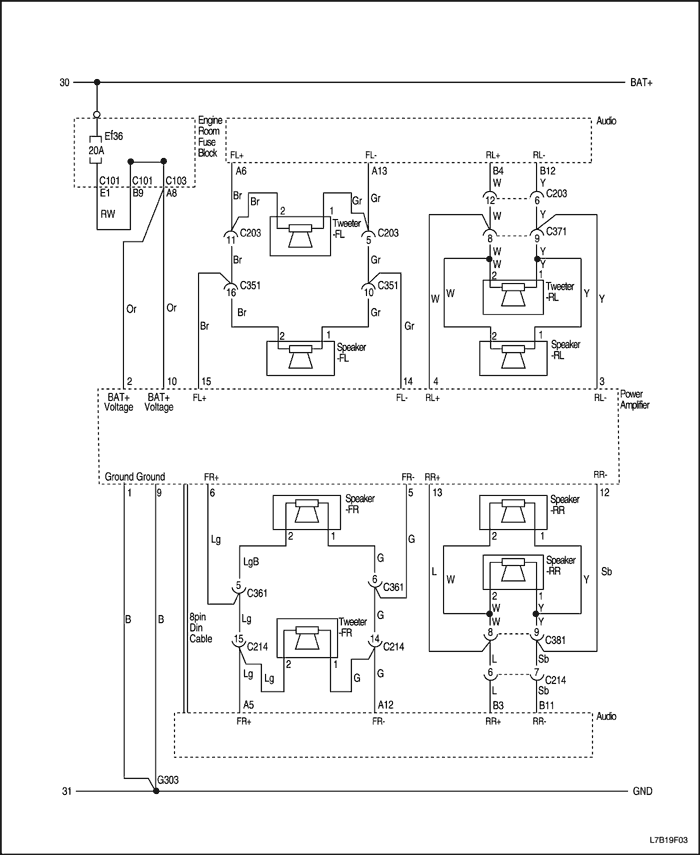
Conducción a derechas (excepto Holden)
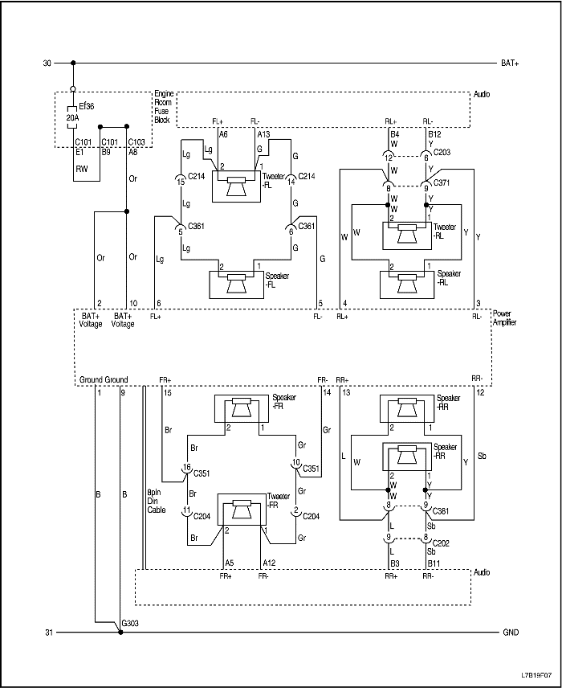
Circuito de altavoz de graves
Conducción a izquierdas
Conducción a derechas (excepto Holden)
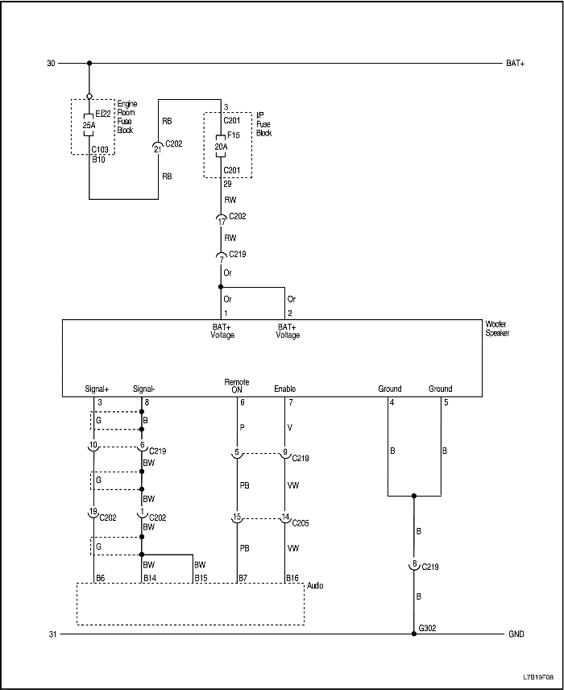
DIAGNÓSTICO
Casete estéro con radio AM/FM
El radiocasete AM/FM no funciona
| Paso | Medida | Valor(es) | Sí | No |
| 1 | Compruebe los fusibles Ef22, F6 y F8. ¿Están fundidos los fusibles Ef22, F6 y F8? | - | Vaya al Paso 2 | Vaya al Paso 3 |
| 2 | - Compruebe si hay algún cortocircuito y repárelo, si fuera necesario.
- Sustituya los fusibles fundidos.
¿Se ha realizado la reparación? | - | Sistema OK | - |
| 3 | - Utilice un voltímetro para comprobar la tensión de la batería en los fusibles Ef22 y F6.
- Gire la llave de contacto a la posición ON y compruebe la tensión de la batería en el fusible F8.
¿Es el valor de la tensión en los fusibles Ef22, F6 y F8 el mismo que el especificado? | 11-14 V | Vaya al Paso 5 | Vaya al Paso 4 |
| 4 | Repare el circuito de alimentación de corriente a los fusibles. ¿Se ha realizado la reparación? | - | Sistema OK | - |
| 5 | - Desmonte el radiocasete.
- Gire la llave de contacto a la posición ON.
- Utilice un voltímetro para comprobar la tensión de la batería en los terminales A7 y B9 del conector del equipo de sonido.
¿El valor de la tensión de la batería es el mismo que el especificado en ambos terminales? | 11-14 V | Vaya al Paso 7 | Vaya al Paso 6 |
| 6 | Repare el circuito abierto entre el conector del equipo de sonido y el fusible. ¿Se ha realizado la reparación? | - | Sistema OK | - |
| 7 | Utilice un ohmímetro para comprobar la resistencia entre masa y el terminal A14 del conector del equipo de sonido. ¿Es igual la resistencia al valor especificado? | ∞ 0 Ω | Vaya al Paso 9 | Vaya al Paso 8 |
| 8 | Repare el circuito de conexión a masa abierto entre el conector del equipo de sonido y masa. ¿Se ha realizado la reparación? | - | Sistema OK | - |
| 9 | Sustituya el equipo de sonido. ¿Se ha realizado la reparación? | - | Sistema OK | - |
La radio no funciona en FM, pero sí en AM y el reproductor de cintas funciona correctamente
| Paso | Medida | Valor(es) | Sí | No |
| 1 | Compruebe si el equipo de sonido funciona con normalidad. ¿No funciona en FM, pero el resto del equipo funciona perfectamente? | - | Vaya al Paso 2 | Sistema OK |
| 2 | Sustituya la radio. ¿Se ha realizado la reparación? | - | Sistema OK | - |
La radio no funciona en AM, pero sí en FM y el reproductor de cintas funciona correctamente
| Paso | Medida | Valor(es) | Sí | No |
| 1 | - Desenchufe el cable de la antena.
- Conecte la antena de prueba al cable.
- Compruebe la recepción de la radio en AM.
¿Funciona correctamente la radio en AM? | - | Vaya al Paso 2 | Vaya al Paso 3 |
| 2 | Sustituya la antena. ¿Se ha realizado la reparación? | - | Sistema OK | - |
| 3 | - Desmonte el equipo de sonido del panel de instrumentos.
- Desenchufe el cable de la antena del equipo de sonido.
- Enchufe la antena de prueba al equipo de sonido.
- Compruebe la recepción de la radio en AM.
¿Funciona correctamente la radio en AM? | - | Vaya al Paso 4 | Vaya al Paso 5 |
| 4 | Sustituya el cable de la antena que une el equipo de sonido y la antena. ¿Se ha realizado la reparación? | - | Sistema OK | - |
| 5 | Sustituya el equipo de sonido. ¿Se ha realizado la reparación? | - | Sistema OK | - |
Altavoces
Los altavoces delanteros funcionan con distorsión o no funcionan, el resto del equipo de sonido funciona correctamente
| Paso | Medida | Valor(es) | Sí | No |
| 1 | - Gire la llave de contacto a la posición ON y encienda la radio.
- Compruebe si los altavoces delanteros funcionan con distorsión o no funcionan utilizando los controles de balance con todas las fuentes (AM, FM, CD).
¿Los altavoces delanteros funcionan con distorsión? | - | Vaya al Paso 2 | Vaya al Paso 4 |
| 2 | Compruebe si el altavoz o la zona de la puerta presentan daños, traqueteos o vibración. ¿La distorsión es causada por alguna pieza que está suelta o estorba al altavoz? | - | Vaya al Paso 3 | Vaya al Paso 4 |
| 3 | Efectúe las reparaciones necesarias para sujetar los componentes que causan la distorsión. ¿Se ha realizado la reparación? | - | Sistema OK | - |
| 4 | - Desmonte los altavoces delanteros y desenchufe su conector.
- Compruebe con un ohmímetro si hay alguna derivación a masa en los cables de los altavoces.
¿Indica el ohmímetro el valor especificado? | - | Vaya al Paso 6 | Vaya al Paso 5 |
| 5 | Repare el cortocircuito entre el conector de los altavoces delanteros y el conector de la radio. ¿Se ha realizado la reparación? | - | Sistema OK | - |
| 6 | Sustituya el altavoz que causa la distorsión por un altavoz en buen estado. ¿Ha desaparecido la distorsión? | - | Vaya al Paso 7 | Vaya al Paso 8 |
| 7 | Sustituya el altavoz. ¿Se ha realizado la reparación? | - | Sistema OK | - |
| 8 | Sustituya el equipo de sonido. ¿Se ha realizado la reparación? | - | Sistema OK | - |
Los altavoces traseros funcionan con distorsión o no funcionan, el resto del equipo de sonido funciona correctamente
| Paso | Medida | Valor(es) | Sí | No |
| 1 | - Gire la llave de contacto a la posición ON y encienda la radio.
- Compruebe si los altavoces traseros funcionan con distorsión o no funcionan utilizando los controles de balance con todas las fuentes (AM, FM, CD).
¿Funcionan los altavoces traseros con distorsión? | - | Vaya al Paso 2 | Vaya al Paso 4 |
| 2 | Compruebe si los altavoces, el capó trasero o la zona del maletero presentan daños, traqueteos o vibración. ¿La distorsión es causada por alguna pieza que está suelta o estorba al altavoz? | - | Vaya al Paso 3 | Vaya al Paso 4 |
| 3 | Efectúe las reparaciones necesarias para sujetar los componentes que causan la distorsión. ¿Se ha realizado la reparación? | - | Sistema OK | - |
| 4 | - Desconecte los altavoces traseros.
- Compruebe con un ohmímetro si hay alguna derivación a masa en los cables de los altavoces.
¿Indica el ohmímetro el valor especificado? | - | Vaya al Paso 6 | Vaya al Paso 5 |
| 5 | Compruebe si hay algún cortocircuito entre el conector de los altavoces traseros y el conector de la radio. ¿Se ha realizado la reparación? | - | Sistema OK | - |
| 6 | Sustituya el altavoz que causa la distorsión por un altavoz en buen estado. ¿Ha desaparecido la distorsión? | - | Vaya al Paso 7 | Vaya al Paso 8 |
| 7 | Sustituya el altavoz. ¿Se ha realizado la reparación? | - | Sistema OK | - |
| 8 | Sustituya el equipo de sonido. ¿Se ha realizado la reparación? | - | Sistema OK | - |
MANTENIMIENTO Y REPARACIÓN
servicio con vehículo en marcha
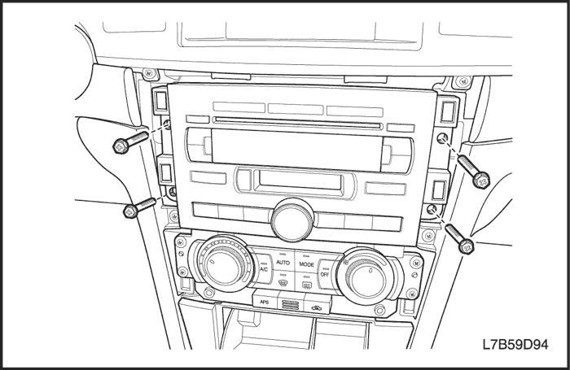
Casete estéro con radio AM/FM
Procedimiento de desmontaje
- Desconecte el cable negativo de la batería.
- Desmonte la moldura central. Consulte la Sección 9E, Instrumentación/información para el conductor.
- Quite los tornillos y desmonte el equipo de sonido.
- Desenchufe los conectores eléctricos del equipo de sonido.
procedimiento de montaje
- Enchufe los conectores eléctricos del equipo de sonido.
Aviso: Metales distintos en contacto directo pueden corroerse rápidamente. Asegúrese de utilizar los elementos de sujeción correctos para evitar una corrosión prematura.
- Monte el equipo de sonido con sus tornillos.
- Monte el equipo de sonido con sus tornillos.
Apretar
Apriete los tornillos del equipo de sonido hasta 4 N•m (35 lb-pulg.).
- Monte la moldura central. Consulte la Sección 9E, Instrumentación/información para el conductor.
- Monte la moldura central. Consulte la Sección 9E, Instrumentación/información para el conductor.
- Conecte el cable negativo de la batería.
- Conecte el cable negativo de la batería.
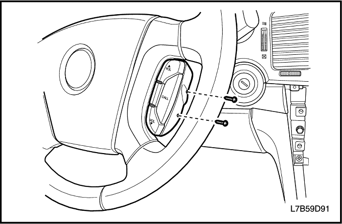
Mando a distancia de audio
(Indicado para conducción a izquierdas, conducción a derechas similar)
Procedimiento de desmontaje
- Desconecte el cable negativo de la batería.
- Quite los tornillos y desmonte el mando a distancia del equipo de sonido.
- Desenchufe los conectores eléctricos.
procedimiento de montaje
- Enchufe los conectores eléctricos.
Aviso: Metales distintos en contacto directo pueden corroerse rápidamente. Asegúrese de utilizar los elementos de sujeción correctos para evitar una corrosión prematura.
- Monte el mando a distancia del equipo de sonido con sus tornillos.
Apretar
Apriete los tornillos del mando a distancia del equipo de sonido hasta 3 N•m (27 lb-pulg.).
- Conecte el cable negativo de la batería.
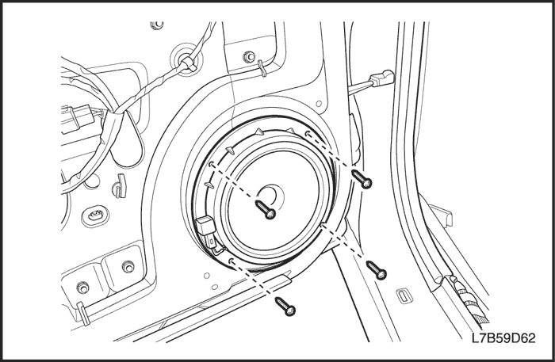
Altavoces de la puerta
Procedimiento de desmontaje
- Desconecte el cable negativo de la batería.
- Desmonte el panel de guarnecido de la puerta. Consulte la Sección 9G, Guarnecido interior.
- Desenchufe el conector eléctrico.
- Quite los tornillos y desmonte el altavoz de la puerta.
procedimiento de montaje
Aviso: Metales distintos en contacto directo pueden corroerse rápidamente. Asegúrese de utilizar los elementos de sujeción correctos para evitar una corrosión prematura.
- Monte el altavoz de la puerta con sus tornillos.
Apretar
Apriete los tornillos del altavoz de la puerta hasta 1,8 N•m (16 lb-pulg.).
- Enchufe el conector eléctrico.
- Enchufe el conector eléctrico.
- Monte el panel de guarnecido de la puerta. Consulte la Sección 9G, Guarnecido interior.
- Conecte el cable negativo de la batería.
- Conecte el cable negativo de la batería.
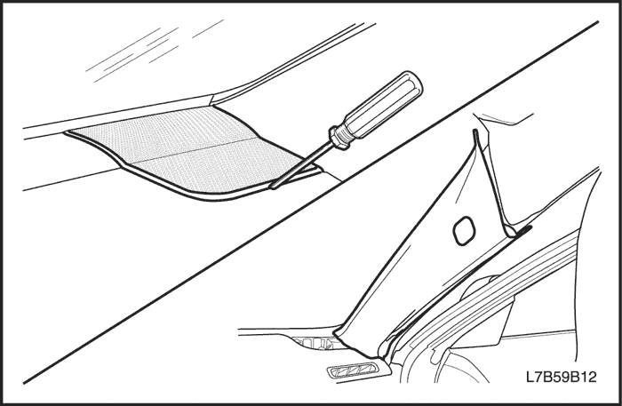
Altavoces de agudos
Procedimiento de desmontaje
- Desconecte el cable negativo de la batería.
- Desmonte el altavoz de agudos delantero haciendo palanca para extraerlo del panel de instrumentos.
- Desenchufe el conector eléctrico.
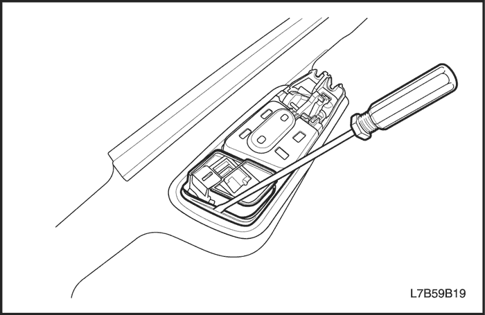
(Se muestra altavoz de agudos delantero, altavoz de agudos trasero similar)
- Desmonte el panel de guarnecido de la puerta trasera. Consulte la Sección 9G, Guarnecido interior.
- Desmonte el altavoz de agudos trasero haciendo palanca.
procedimiento de montaje
- Monte el altavoz de agudos trasero en el panel de guarnecido de la puerta trasera.
- Monte el panel de guarnecido de la puerta trasera. Consulte la Sección 9G, Guarnecido interior.
- Enchufe el conector eléctrico.
- Monte el altavoz de agudos delantero en el panel de instrumentos.
- Conecte el cable negativo de la batería.
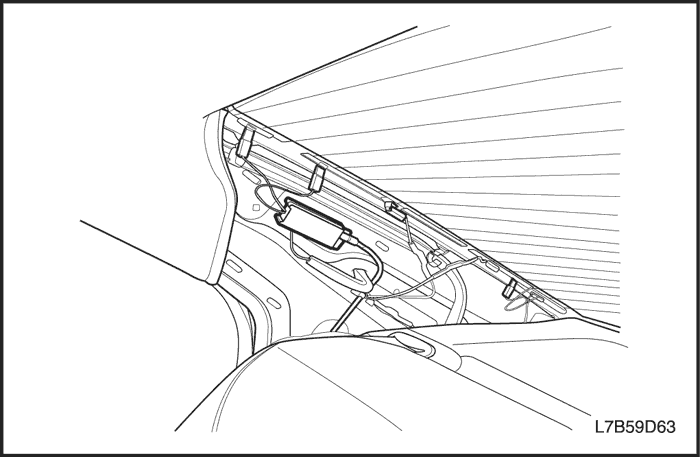
Módulo de antena de cristal
Procedimiento de desmontaje
- Desconecte el cable negativo de la batería.
- Desmonte el panel de guarnecido del montante - C. Consulte la Sección 9G, Guarnecido interior.
- Desenchufe el conector eléctrico.
- Quite el tornillo y desmonte el módulo de la antena del cristal.
procedimiento de montaje
- Monte el módulo de la antena del cristal con su tornillo.
Apretar
Apriete el tornillo del módulo de la antena del cristal hasta 2 N•m (18 lb-pulg.).
- Enchufe el conector eléctrico.
- Monte el panel de guarnecido del montante C. Consulte la Sección 9G, Guarnecido interior.
- Conecte el cable negativo de la batería.
DESCRIPCIÓN GENERAL Y FUNCIONAMIENTO DEL SISTEMA
Casete estéro con radio AM/FM
Se puede elegir entre dos equipos de sonido. En los modelos estándar y deluxe se ofrece radio con reproductor de CD o cargador de CD (6 discos en salpicadero). Ambos modelos disponen del sistema RDS (sistema de datos por radio) que selecciona automáticamente la mejor emisora de la serie de emisoras RDS que se escuchen en ese momento. El reproductor de CD de esta unidad reproduce discos CD-R, CD-R/W y CD-DA, y también se pueden escuchar formatos MP3/WMA y CD-DA (datos de música solamente). La unidad cambia automáticamente entre CD y MP3/WMA e indica en pantalla la selección actual.
Sistema de seguridad del equipo de sonido
El equipo de sonido cuenta con una función de bloqueo de seguridad. La activación de la función de bloqueo de seguridad protegerá la unidad contra el robo. Cuando se registra un código de identificación con la función de bloqueo de seguridad, aunque alguien robe la unidad y la instale en otra parte, no podrá usarla si no introduce dicho código identificador.
El procedimiento es el siguiente:
- Activación del bloqueo de seguridad (registro del código de identificación)
- Apague la unidad.
- Pulse el botón de encendido (1) al tiempo que mantiene pulsado el botón (14) y el botón funcional más a la izquierda (12).
- Se entra en el modo de registro del código de identificación y aparecen en la pantalla las cifras 1-6.
- Pulse los botones funcionales debajo de "1-6" en la pantalla para introducir el código de cuatro dígitos.
- Pulse el botón de encendido (1).
- El código de identificación quedará registrado y la unidad se apagará.
- Desactivación del bloqueo de seguridad
- Apague la unidad.
- Pulse el botón de encendido (1) al tiempo que mantiene pulsado el botón (14) y el botón funcional más a la izquierda (12).
- Se entra en el modo de registro del código de identificación y aparecen en la pantalla las cifras 1-6.
- Pulse los botones funcionales debajo de "1-6" en la pantalla para introducir el código de cuatro dígitos.
- Pulse el botón de encendido (1).
- Si el código introducido coincide con el registrado, se desactivará el bloqueo de seguridad y la unidad se apagará.
Si desea más información sobre el equipo de sonido, consulte el manual de instrucciones.
Aviso: Una vez registrado un código de identificación, se necesitará dicho código para desactivar el bloqueo de seguridad. Tenga cuidado de no olvidar el código de seguridad. Si se introduce un código incorrecto diez veces seguidas para intentar desactivar el bloqueo de seguridad, no se permitirán más intentos durante una hora aproximadamente.
Altavoces
Los equipos de sonido tienen seis u ocho altavoces: dos van montados en las puertas delanteras, otros dos en las puertas traseras, más dos altavoces de agudos delanteros en la parte superior del panel de instrumentos y dos altavoces de agudos traseros en las puertas traseras.
Cuidado del disco compacto
Maneje los discos con cuidado. Guarde los discos en cajas protectoras y alejados del sol, el calor y el polvo. Si se ensucia su superficie, humedezca un trapo limpio y suave en una solución detergente neutra y limpie el disco con suavidad.